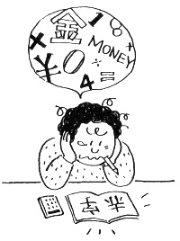

2019年度夏季手当
「2019年度夏季手当」を申し入れる
本部は2019年5月17日、申第22号「2019年度夏季手当に関する申し入れ」を経営側に提出しました。
4月25日に発表された当社の「2018年度期末決算」は、単体で期首に予想した「増収減益」を覆し「増収増益」を実現することができました。このことは、すべてのＪＲ労働者の増収に向けた努力と職場における紙一枚、水一滴に至るまでのコスト削減の努力が結実したものと言えます。

一方、ＪＲ労働者の家計に目線を転じれば、非消費支出が継続的に増加していることによる生活への圧迫感から未だ抜け出せずにいます。さらに本年10月に予定されている消費税の10％への増税は、家計の先行きをますます不透明にしています。
「変革2027」に謳う「社員・グループの持続的な成長」のためには、今期決算を実現した「仕事を通じた達成感」と合わせ、応分の成果配分を通した「労働条件の向上」が不可欠です。
したがって、東日本ユニオン本部は「2019年度夏季手当について」以下の通り申し入れました。
「2019年度夏季手当に関する申し入れ」
- １、2019年度夏季手当は「基準内賃金の3.2ヶ月分」とし、6月28日までに支払うこと。
- ２、55歳以上の社員（昭和39年4月1日以前生まれ）に、一律5万円の加算をすること。
- ３、グリーンスタッフの精勤手当に、一律5万円の加算をすること。
以 上
第1回団体交渉開催
2019年5月31日、本部・本社間で「2019年度夏季手当」の第１回団体交渉が開催されました。交渉では、組合側から要求の趣旨説明を行い、経営側からはそれに対する現状認識が示されました。
【組合側】満額回答は十二分に可能だ
- 2018年度期末決算は連結で３兆円を超え「過去最高」。社員が汗した結果である。
- 株主配当が75円から82.5円に上げられるが、労働者への投資も不可欠である。
- 組合員、社員の中には、成果に対して報われない事で、不満・不安が広がっている。モチベーションの低下は事故・不祥事の原因になりかねない。
【経営側】世の中と比較しても既に十分高い水準に達している
- 今年度（2019年度）の決算見通しは全て減益となる見込みである。
- 景気動向指数など楽観視できる状況にない。消費税引き上げの影響もある。
- 「新幹線鉄道大規模改修引当金」が毎年240億円発生する。
- 人件費も減少ペースが鈍っており、2023年頃から上昇に転じる。
出せる時に出さなければ、いつになっても出せない。
- 経営側が「先行きは明るい」なんて言ったことはない→“見通しは楽観視できない”は理由にならない。
- “改修費用が発生する”は、既に織り込み済み→これも理由にならない。
結局、経営側が言っているのは、出さないための方便でしかない。
第2回団体交渉に臨む
自信を持って満額回答できる体力は十分にある
本部交渉団は6月6日、申第22号「2019年度 夏季手当に関する申し入れ」の第2回交渉に臨みました。
交渉の席上で「損益の推移」「景気動向指数」「生産年齢人口の推移」「期末手当支給月数の推移」等の資料を基に議論を行いました。 経営側の考えに対し、本部交渉団は組合側の考え方を述べることで満額回答ができる体力が経営側には十分にあることを強く主張しました。
組合側主張
- 夏季手当は2018年度期末決算に基づく一時金であり、成果に対する配分を強く求める。
- 必要な箇所に必要なコストをかけているのか、営業費用の使い方がわかりづらい。経営判断のみで行っており、機械化等の検証が弱いと感じる。人間労働のほうが良い場合もあり、物件費を人件費にまわせるのではないか。
- 過去から夏季手当3ヵ月を超えないという水準は、経営側が決めているのではないか。
- 物価の上昇や今後、消費税10％への増税等があるなかで、安定した安心できる生活費が必要である。社員と家族の幸福の実現のために満額支給で応えるべきである。
経営側主張
- 一時金の手当ということは認識しているが、直近の業績だけではなく、中長期的に見ていく必要がある。
- 人件費は下がっているが、エルダー社員の賃金改善もあり、予定より下がってはいない。社員の平均年齢の下がり幅より、個人の基準内賃金は下がっておらず、中長期的に見れば退職者数も頭打ちとなり、人件費は上昇に転じるため慎重な判断が必要である。
- 当社は業績連動方式をとっていない。平成21年の夏季手当は2.55ヵ月の支給まで下がってはいるが、デジタルに上下するよりは大きな波にせず、安定した支給としている。
- 営業利益の水準は大きな要素であり、世間動向は無視できない。民間と比べても支給額は低くはない。また「3ヵ月超の回答はしない」とは、最初から決めてはいない。
第3回団体交渉。経営側より回答が示される。
2019年6月11日、中央本部は申第22号「2019年度 夏季手当に関する申し入れ」の第3回交渉に臨みました。今回の団体交渉で、経営側より回答が示されました。
回答は以下の通りです。
- 基準内賃金の 2.91ヶ月分
- 6月28日（金）以降、準備出来次第
- 平均支給額984,000円（平均年齢40.6才）
- 55歳以上の社員、グリーンスタッフへの一律５万円の加算はゼロ回答
本部は持ち帰り検討としました。
「2019年度夏季手当」妥結
2019年6月12日、中央本部は「2019年度夏季手当」について妥結することを確認しました。
組合側は短期的な業績に対する成果配分を行うべきと強く主張した上で、2.91ヶ月とした経営判断の根拠等を質し、再考および上積みを求めましたが、対する経営側は営業利益が「減益」である点を繰り返し強調し、最終回答とする姿勢に終始しました。
組合側は持ち帰り検討とし、直ちに持ち回り中央執行委員会を開催しました。審議を通じて非常に悔しさは残りますが、回答に対して妥結することを確認しました。
現在、東日本ユニオンには「社員に対する評価と期待は過去4年間と変わらないのか！」「消費増税など、社員の生計費も変革が求められている！」など、多くの不満や意見が寄せられています。働く者が納得できる労働条件・労働環境を実現させるために、東日本ユニオンに加入して、私たちと一緒に取り組みましょう！